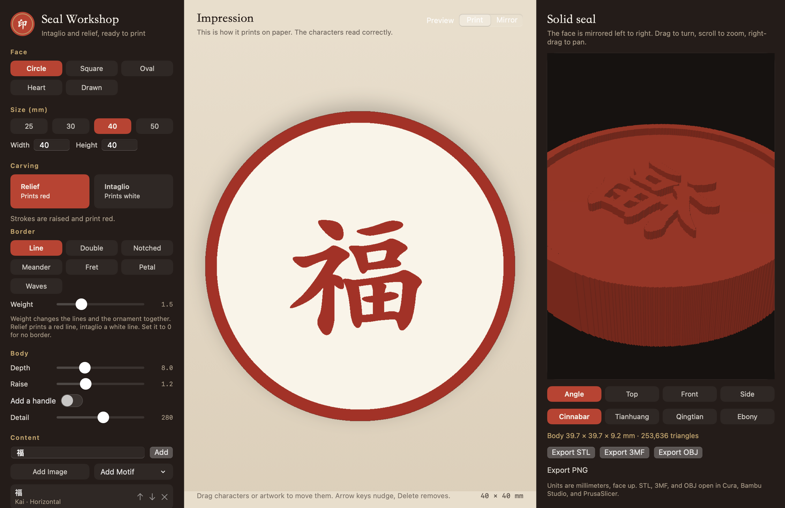
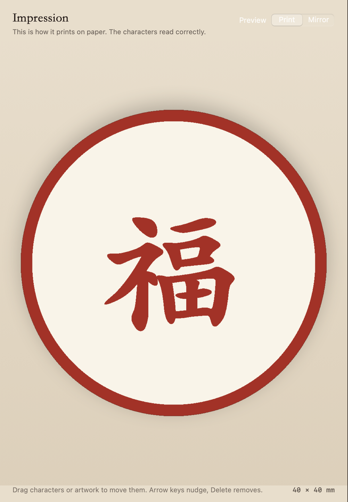
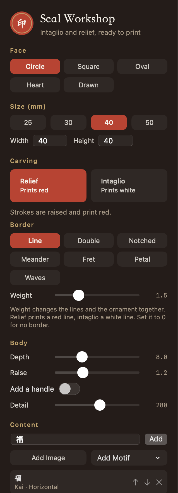
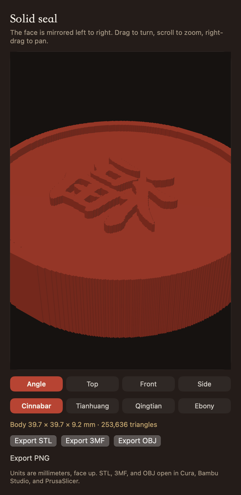

SealGen designs a seal you can 3D print. The solid is mirrored left to right, so the stamped impression reads correctly.

The window after it opens. Set the face on the left, check the impression in the center, and turn the solid on the right.
Design the face

Impression shows the characters the right way around. Mirror reverses left and right, which is the direction cut into the seal.
Under Face, choose Circle, Square, Oval, or Heart, or draw an outline. Squares can have rounded corners. For a drawn shape, drag a loop and release to close it. A stroke that is too short or too small is not used.
Set the width and height in millimeters. A circle keeps both sides equal.
Under Content, type characters and add them. You can also add an image or a motif: Plum, Cloud, Taiji, Rays, Diamond, or Meander.
Select an item to change its font, layout, bold setting, size, spacing, and rotation. Layouts are Horizontal, Vertical, Grid left, Grid right, Ring, and Fill face. Fill face enlarges the characters inside the border. Several characters run in columns from right to left unless you insert line breaks.
Drag characters or artwork on the canvas. Arrow keys nudge, and Delete removes the selection.
Carving and border

Shape, size, relief or intaglio, and the border are on the left. Set the weight to 0 for no border.
Relief raises the strokes so they print red. Intaglio recesses them so they print white. Borders are Line, Double, Notched, Meander, Fret, Petal, and Waves. Weight changes the lines and the ornament together. Set it to 0 for no border. A relief border prints red, and an intaglio border prints white.
Depth is the body thickness. Raise is how far the strokes stand above the field. Turn on Add a handle if you want one. Detail controls how fine the face grid is.
Preview

Drag to turn, scroll to zoom, and right-drag to pan. Angle, Top, Front, and Side reset the view. Cinnabar, Tianhuang, Qingtian, and Ebony change only the preview color.
Impression, in the center, is how the seal prints on paper. Switch to Mirror to see the direction cut into the seal. The switch is unavailable while you are drawing an outline.
The solid seal is on the right. The characters on that face are mirrored, so the stamped impression reads correctly.
Export and print
The export buttons sit under the solid preview. Export STL, 3MF, or OBJ. Units are millimeters and the face points up. The files open in Cura, Bambu Studio, and PrusaSlicer. Export PNG saves the impression, which is never mirrored.
Print with the face on top. A handle may need supports on the back.